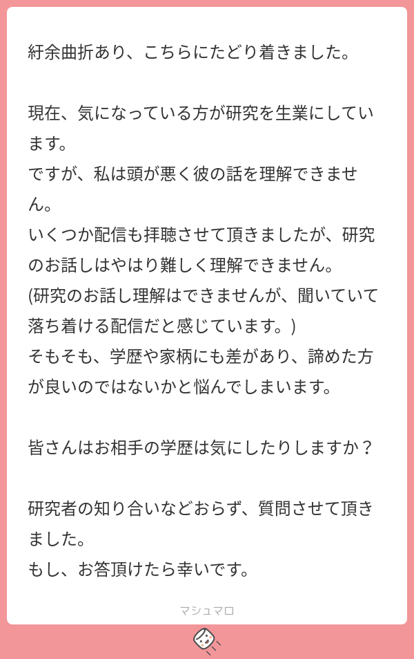

44: Carbon Is All You Need
Starring


Show notes
目次
ぶひんチョイス
00:57 C-S-H系高圧室温超伝導の撤回
- C-S-H系高圧超伝導の近況 - Interaxion Keywords
- RETRACTED ARTICLE: Room-temperature superconductivity in a carbonaceous sulfur hydride
- ぶひんブログ: チョウデンドウは作れる❤ ～C-S-H系高圧室温超伝導の撤回とHirschの批判～
- How to measure a voltage without going to the lab
JavaScript も書ける Hirsch 先生 - 電気抵抗も捏造説
- arXiv:2210.10766 Vector graphics extraction and analysis of electrical resistance data in Nature volume 586, pages 373-377 (2020)
- Nature論文は磁化率のデータの不審さで撤回されたが、電気抵抗はゼロ抵抗を示しておりそこはノーコメントだった
- 今回、論文のベクター画像を抽出して、電気抵抗のデータ画像が変なステップを刻んでいることを確認したと主張
- しかも、他の水素化物超伝導のデータを同じように検証しても、同じようなステップはみえなかったとのこと
- Nature論文はすべてが嘘だった・・・？
- Unearthly Materials — Kickstart the century of superconductivity
かっこいいウェブサイト - Observation of the Wigner-Huntington transition to metallic hydrogen - Science
Diasらの金属水素論文 - Pressure-Induced Superconducting State of Europium Metal at Low Temperatures
同じく撤回された高圧下のユーロピウム超伝導
24:03 グラファイト500K越え室温超伝導 (フライパン超伝導)
- Hidden Granular Superconductivity Above 500K in off-the-shelf graphite materials
- Institut Néel - Wikipedia
29:15 常圧下室温超伝導
32:01 夢の550K超伝導（水素化物超伝導にアンモニアボランを加える）
- Frontiers - Hot Hydride Superconductivity Above 550 K
- ランタンとアンモニアボランを混ぜて希土類水素化物を作ると高圧下で超伝導になる
- ここまではよい
- さらに温度を上げて化学反応をすすめると、転移温度があがる。最大で556Kまで超伝導転移温度が上がることを確認
- 金属半導体転移や構造相転移が原因じゃないと議論してる
- 室温超伝導の夢は終わらねぇ！
- ランタンとアンモニアボランを混ぜて希土類水素化物を作ると高圧下で超伝導になる
37:16 マンガン酸化物高温超伝導
- Possible high-Tc superconductivity exceeding 100 K in Ir-substituted perovskite-type manganese oxides
- マンガン酸化物薄膜で100K超えの超伝導ぽい電気抵抗の変化の観測
- 転移温度の磁場依存性が従来のマンガン酸化物の巨大磁気抵抗とは逆
- 従来は磁場かけると転移温度上がる、今回は下る
- 銅、鉄、ニッケルに続いて、ついにマンガン酸化物の時代来たな！
47:12 脳が量子計算をしている可能性、つまり脳内超伝導（？）
- New research suggests our brains use quantum computation
- 脳の中の水の陽子スピン間のエンタングルメントの有無をMRIで調べると、たしかにエンタングルメントが存在しているっぽい
- つまり脳には量子相関が存在し、それが意識につながっている可能性がある
- まあつまり脳内超伝導ですよ
55:56 ブカチョイス
56:11 地球外超伝導体
- The Puzzle of Meteoritic Minerals Heideite and Brezinaite; Are they Iron-based Superconductors? Are they Technosignatures? [arXiv]
- 確認していないけど、いろいろ似ているからこれもたぶん超伝導体
- 規則‐不規則転移温度が450℃と低く、製作しづらいことから”technosignature”ではないか（後述の合成が成功しているL10-FeNiは300℃）
- SETIの”nine-axes-of-merits”で評価したらわかるけど、この物質はみんな研究するべき！！
- SDW = スピン密度波 - Wikipedia
- SETI = 地球外知的生命体探査 - Wikipedia
最初の SETI として有名なオズマ計画を主導したドレイク先生 (ドレイク方程式でも有名) は今年9月に亡くなっています。
The Puzzle of Meteoritic Minerals Heideite and Brezinaite; Are they Iron-based Superconductors? Are they Technosignatures?https://t.co/5j4qEfiknq
隕石に含まれる鉄系超伝導体が地球外テクノロジーの証拠の可能性、了解！— 部品（本田翼） (@tjmlab) September 14, 2022
1:06:24 革新的なL10-FeNiの作り方
- Direct Formation of Hard-Magnetic Tetrataenite in Bulk Alloy Castings [Wiley]
- Ivanov, Y. P., Sarac, B., Ketov, S. V., Eckert, J., Greer, A. L., Adv. Sci. 2022, 2204315
- L10-FeNiがキャスティングでつくれる！！？配向できんの！？
- P入れて規則‐不規則転移温度が200℃上昇
- 磁気特性データなし！なぜ…
- 高性能磁石の製造にレアアース不要の可能性、中国に打撃も―中国メディア
- L10-FeNi の話は Ep. 9 で詳しくしてます
1:18:24 うってぃチョイス
1:18:40 巨大電気熱量効果
1:34:25 温度が上がると電場がなくても勝手に分極していく強誘電体？！
- Simple Guanidinium Salts Revisited: Room–Temperature Ferroelectricity in Hydrogen-Bonded Supramolecular Structures
- Marek Szafrański, J. Phys. Chem. B 115, 27, 8755–8762 (2011)
- 残念ながらOpen版はないです…
- 温度が上がると電場がなくても勝手に分極していく強誘電体？！
- 焦電体：温度が上がると電荷を吐き出す材料（焦電体セラミックスの紹介）
- 工業的には赤外線センサーに利用
- 普通は温度が上がると強誘電分極が小さくなるので焦電係数は負になる
- Supporting Informationの焦電係数もちゃんと正になっている
- 本文では結晶構造から昇温で分極が大きくなる理由も説明しているが…
- （たぶん）電流計の接続方向には気をつけましょう…という話
- サイドストーリー
- ポーランド人のMarek Szafrański氏、中国グループへの”Comment on～”論文がたくさん
- Comment on “Improper molecular ferroelectrics with simultaneous ultrahigh pyroelectricity and figures of merit” by Li et al.
20年前に我々が見つけた材料の論文に言及せずに新発見したような論文を出すな！（あと解釈が間違ってる！） - Comment on Ferroelectricity in Bis(imidazolium) L-Tartrate
- Comment on the Phase Transition Mechanism in Diglycine Methanesulfonate
- Ferroelectric Order of Parallel Bistable Hydrogen Bonds
自身の論文についたコメントでも中国人グループと喧嘩…
- Comment on “Improper molecular ferroelectrics with simultaneous ultrahigh pyroelectricity and figures of merit” by Li et al.
- ポーランド人のMarek Szafrański氏、中国グループへの”Comment on～”論文がたくさん
1:46:00 おたより

お知らせ
【動画やポッドキャストのBGMをお探しの方へ】
サイトウが大量に制作したトラックの中から厳選された作品が、国内最大級の音源販売サイト Audiostock で販売開始されました。
単品購入 or 定額制を選択可。
ぜひご活用ください！！https://t.co/7dSi0Mw6kG— サイトウナヲキ (@sai_enlightened) June 29, 2022
- 出演して頂ける方や感想などをお待ちしております。 #interaxion
おたよりコーナーを作りました。質問、感想、要望などお待ちしております。https://t.co/rz0mlRKZU3
— Interaxion Podcast (@interaxion) January 12, 2021